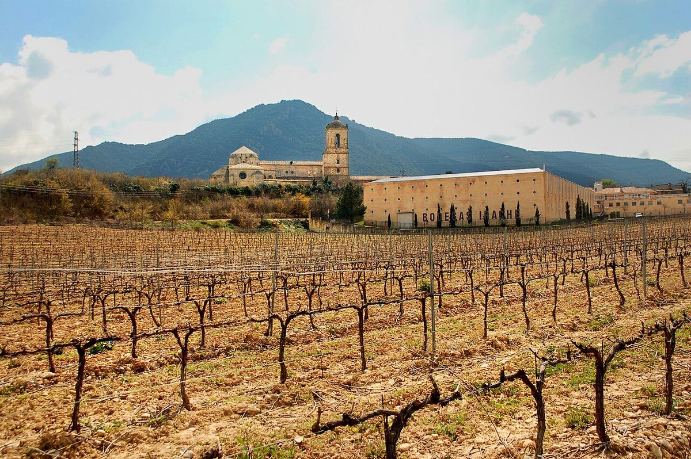

ROUGE
La Navarre est l'une des plus anciennes dénominations d'origine d'Espagne, avec cinq sous-zones allant des vallées pré-pyrénéennes à la plaine de l'Èbre. Traditionnellement réputée pour ses rosés de grenache, elle produit aujourd'hui une large gamme de rouges, de blancs et de vins doux de muscat.

La viticulture navarraise a des racines romaines et s'est développée au Moyen Âge sous l'égide des monastères et du chemin de Saint-Jacques, qui traverse la région et apporta pèlerins, commerce et échanges avec l'autre versant des Pyrénées. L'ancien royaume de Navarre conserva pendant des siècles une production viticole importante. Après le phylloxéra, le grenache devint le cépage dominant et, pendant une bonne partie du XXe siècle, la région fut synonyme de rosé. À partir des dernières décennies de ce siècle, la recherche viticole et œnologique encouragée par le gouvernement régional et l'arrivée de cépages comme le tempranillo, le cabernet-sauvignon, le merlot et le chardonnay diversifièrent profondément sa production. La Navarre est l'une des plus anciennes dénominations d'origine d'Espagne.
L'appellation occupe la moitié sud de la Communauté forale de Navarre et se divise en cinq sous-zones : Baja Montaña, Valdizarbe et Tierra Estella, au nord, plus fraîches et humides ; Ribera Alta et Ribera Baja, au sud, le long de l'Èbre et de ses affluents, plus chaudes et plus sèches. Une partie du territoire navarrais appartient également à la DOCa Rioja, et plusieurs Vinos de Pago se trouvent aussi en Navarre.
Le climat est de transition : les sous-zones septentrionales subissent l'influence atlantique et montagnarde, avec davantage de pluie et des températures modérées, tandis que la Ribera connaît un climat continental à tendance méditerranéenne, sec, aux étés chauds, souvent balayé par le cierzo, un vent fort et sec du nord-ouest. Les sols sont en général calcaires et bruns, avec des zones de graviers et de galets roulés sur les terrasses fluviales et des sols alluviaux près des rivières.
Parmi les rouges se distinguent le tempranillo, le grenache, le cabernet-sauvignon, le merlot, le graciano, le mazuelo (carignan), la syrah et le pinot noir. Parmi les blancs, le chardonnay, la viura (macabeo), le grenache blanc, la malvasía, le sauvignon blanc et le moscatel de grano menudo (muscat à petits grains). Le rosé de grenache demeure un style emblématique ; il est traditionnellement élaboré par saignée, en séparant le moût après un bref contact avec les peaux. À ses côtés, on produit des rouges jeunes et élevés, souvent issus d'assemblages de cépages locaux et internationaux, des blancs frais ou fermentés en barrique et des vins doux de muscat, dont des vendanges tardives.
Les rouges peuvent porter les mentions Crianza, Reserva et Gran Reserva, selon les durées d'élevage en barrique et en bouteille fixées par la réglementation, et l'on élabore aussi des vins brièvement passés en bois.